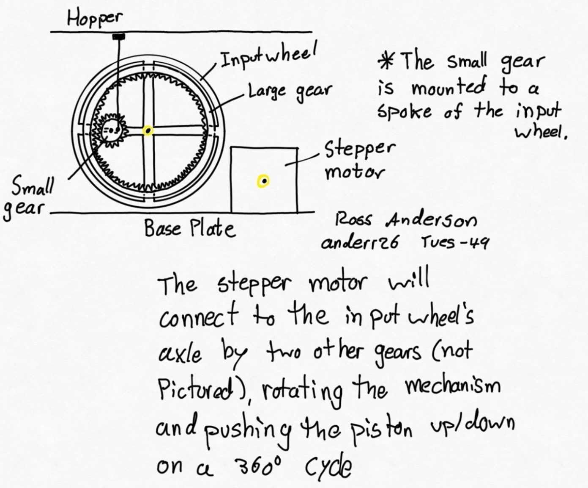

Project 3:
Revenge of the Recycling System
TL;DR
Soft Skills
Technical Skills
Time management

Autodesk Inventor (CAD)
Communication
3D Printing
Organization

Python
Overview
Our team was tasked with designing and creating a simple, easy-to-use
device for one of the clients - a visually impaired person or a person
with second degree multiple sclerosis - helping them navigate the world
around them without impeding other daily activities.
Problem Statement
- Design a system for sorting and recycling containers.
Objectives
- Hopper is able to pivot around an axis parallel to the floor to dump containers into bins.
- Hopper is able to securely hold the containers while in transport - Program can determine the material of containers.
- Program can load containers into the hopper.
- Program can sort containers even if given in a random order
- Program can determine the correct bin to dump each container into.
- Create modular, efficient code that minimizes repetition and overall lines of code.
Constraints
- The total mass of the new container positioned in the Sorting Station as well as all the containers currently on the Q-bot is lighter than 90 grams.
- Limit on actuator size of 10x7 holes on baseplate.
- Mechanism must connect to baseplate at 2 locations.
- Use of one of two provided actuators is required (linear or rotary).
- The container should be stable under the pressure by the grip.
- Hopper must be able to fit three containers.
- Hopper must connect to the base plate via a bolt and two mounting clips.
- Q-bot must follow the yellow line (physical bonus).
The final arm prototype, complete with joystick controls.
Design Process
Preliminary prototype designed by Ross Anderson
Preliminary prototype designed by Ross Anderson
- The modelling sub-team created two concept sketches. One for the linear actuator, and one for the rotary actuator.
- Using a weighted decision matrix, we decided that the rotary design was best as it ranked the highest in the
matrix with the added bonus of being creative.
- By selecting the rotary design, the team showed an ability to make informed decisions that consider both quantitative and qualitative factors, which is a critical skill in the field of engineering and design.
- The decision-making process highlighted the importance of collaboration and communication within the team, as each member had valuable input that contributed to the final decision. It also emphasized the value of an inclusive and democratic approach to decision-making, where everyone's opinions and ideas are heard and considered.
- The use of a weighted decision matrix allowed the team to create an objective framework for evaluating options, which can be a useful tool in future design projects. It also provided an opportunity for the team to practice and improve their skills in data analysis and interpretation.
- Creating many concept sketches are important as it provides the opportunity to elaborate ideas and discuss with peers on
what can be improved, which is what we did. In addition, we created a list of benefits for both actuators to help us decide which actuator we wanted to use throughout the project.
Challenges Encountered
What They Were
[ 1 ] - After talking to some peers, they suggested that using a stick to lift the hopper up would snap as it would not be able to support the load of the hopper with trash on it.
[ 2 ] - Another problem I encountered was that the gears and axles took too long to print as the maximum print time was 2 hours.
[ 3 ] - Another problem I encountered was that the teeth of the gears were too close to each other, which would cause meshing errors when 3D printing. The teeth had to be at least 2mm apart for a successful print.
How They Were Overcame
[ 1 ] - I changed the piston design to be thicker and include a guiding hole, ensuring that it can withstand such loads
[ 2 ] - To fix this problem, I redesigned parts to be thinner after running inventor stress simulations, minimizing mass and saving a lot of time. In the end, I was able to 3D print the parts within the design studio time slot.
[ 3 ] - To fix this problem, I reduced the number of teeth. In addition, I made the gear thinner to reduce the printing time.
What I Contributed
The final assembly for the mechanism.
- Conducted research on materials and manufacturing processes to identify suitable options for the project
- Developed multiple design concepts and presented them to the team for feedback and evaluation
- Worked closely with the modelling sub-team to refine and iterate on the chosen concept, providing feedback and suggestions for improvements
- Led the testing and validation phase of the project, creating a testing plan and coordinating with team members to execute it
- Contributed to the project report, outlining the design process and summarizing the team's findings and recommendations
- Collaborated with team members to ensure that all project deadlines were met and deliverables were completed on time
- Offered constructive feedback and support to team members throughout the project, promoting a positive and collaborative team environment.
A Rough Timeline
Milestone 1
- Understanding the problem assigned and the accompanying objective, functions, and constraints.
- Delegated team roles and created an agenda for who would be doing what work.
- Crafted an initial problem statement and framed the problem with client notes
- Created a viable testing plan to verify and iterate upon our initial prototypes
Milestone 2
- each team member came to the meeting with a brief research paper, outlining areas to look into for future design considerations.
- Worked on functional analysis, revising previously explored concepts in Milestone 1, and each team member proposed two unique design solutions based on this analysis.
- Had a design review with a TA to go over our ideas and concepts, and got valuable feedback about what would work and what wouldn't. Based on this, the team now had some promising potential designs.
The high-level coding flowchart we developed.
Milestone 3
- Initial prototypes were fabricated from the refined concepts from milestone 3. Each person came with a real-world prototype of what they'd been working on the past week.
- A weighted decision matrix was used to narrow down prototypes and pick a final design to pursue for the remainder of project 3.
- Another design review was held where the team was given feedback on the current physical prototypes and was provided with insight about how to turn a good idea into a great idea.
Milestone 4
- The team used feedback from various sources such as design reviews, IAI's, TA's, faculty mentors, and science students to create a refined prototype that incorporated the suggested improvements.
- Several iterations were made to optimize the performance of the refined prototype, and the team members who were not directly involved in the prototyping process took a larger role in the prototyping test plan to ensure that the final design was functional and met the required objectives.
- After creating the final physical prototype, the team presented it at another design review to receive feedback and insights on how to improve the design further and turn it from a good idea into a great idea.
The final arm design.
Reflection TL;DR
- Working with a great team on a challenging project was a rewarding experience that taught me the value of clear communication. We established regular check-ins and used project management tools to keep each other up-to-date, which helped us stay on track and make timely decisions. This also allowed us to leverage our individual strengths and work more efficiently as a team.
- Embracing a growth mindset was critical in overcoming the obstacles we faced during the project. By remaining open-minded and willing to learn from our mistakes, we were able to come up with creative solutions and push beyond our limits. This attitude not only helped us achieve better results but also allowed us to build a culture of continuous learning and improvement.
- Reflecting and debriefing after each milestone helped us continuously refine our approach and make progress towards our goals. We identified what went well, what could have been improved, and how we could apply those lessons in the future. This practice not only helped us achieve better results but also allowed us to develop a more comprehensive understanding of the project's impact and potential for future growth.
Reflection (Long Format)
Throughout the duration of the project, I had the opportunity to work with a great team on a challenging but exciting project. I am proud of the work we have accomplished and the learning experiences that we gained.
One of the things that stood out to me was how crucial it was to have clear communication channels between team members. We made sure to establish regular check-ins and keep each other up-to-date on our progress, which allowed us to stay on track and make timely decisions. It also enabled us to work more efficiently and effectively as a team.
Another key takeaway from this project was the importance of embracing a growth mindset. At times, we encountered obstacles that seemed insurmountable, but by remaining open-minded and willing to learn from our mistakes, we were able to come up with creative solutions to overcome them. This attitude allowed us to push beyond our limits and achieve results that we were proud of.
Finally, I realized the importance of reflection and debriefing after each milestone. By taking the time to reflect on what went well, what could have been improved, and how we can apply those lessons in the future, we were able to continuously refine our approach and make progress towards our goals.
Overall, this project provided me with valuable experiences and insights that I will carry with me into future endeavors. I am grateful for the opportunity to have worked with such an outstanding team and for the knowledge and skills that we gained together.